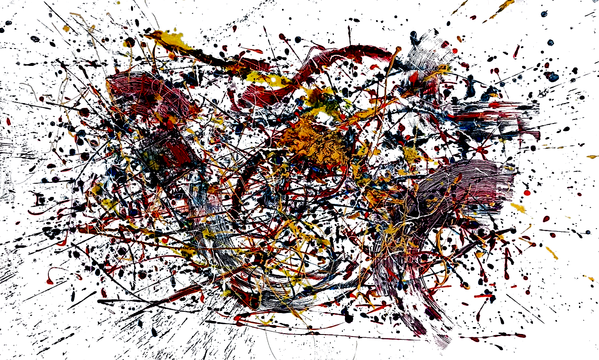
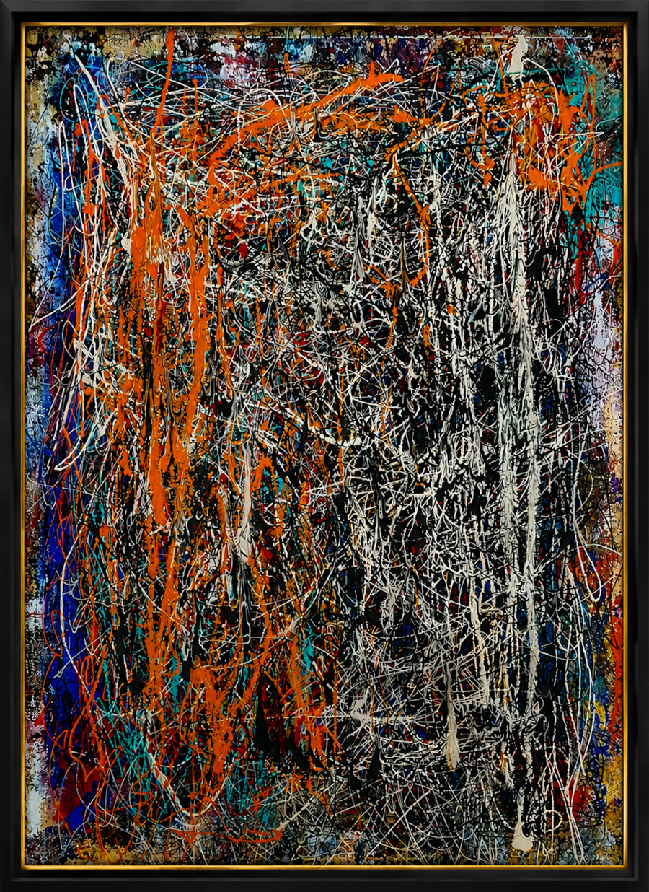
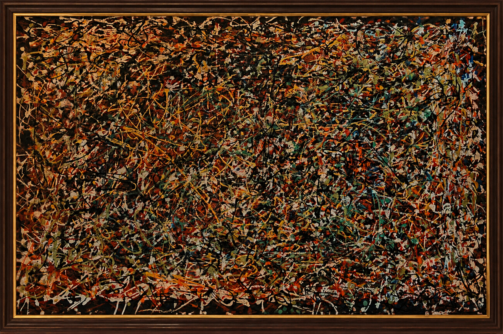
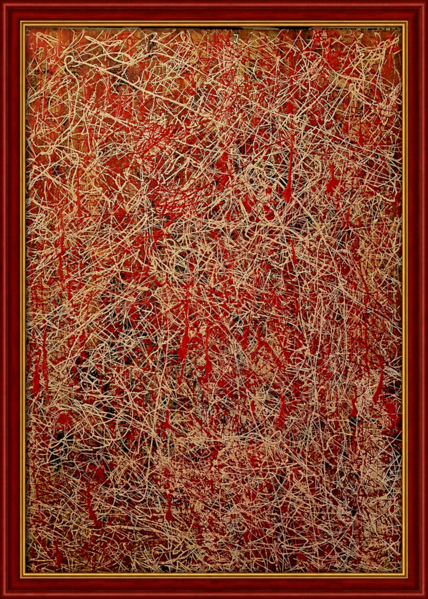
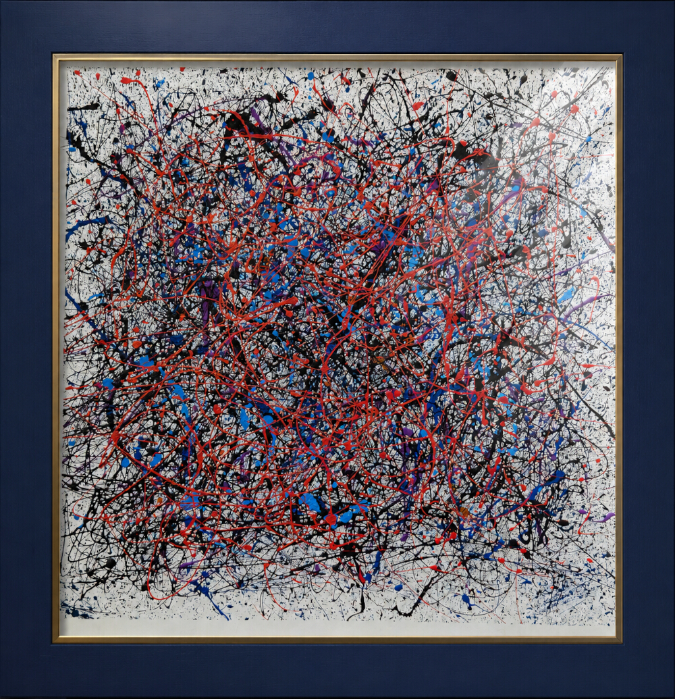

Elodie
Technique : Acrylique sur toile
Dimensions : 75 x 110 cm
Année : 2023
Elodie,mille lianes de lumière tissent un rêve sans fin

Filao
Technique : Acrylique sur toile
Dimensions : 120 x 80 cm
Année : 2022
Du désordre naît parfois la plus secrète des harmonies

Océan de braise
Technique : Acrylique sur papier
Dimensions : 80 x 80 cm
Année : 2024
Sous les vagues du temps, un feu secret continue de danser dans les profondeurs du monde

Ma cathédrale
Technique : Acrylique sur toile
Dimensions : 75 x 110 cm
Année : 2018
Derrière l'enchevêtrement des lignes s'élève une cathédrale de pensées

Les veines du temps
Technique : Acrylique sur papier
Dimensions : 80 x 80 cm
Année : 2018
Chaque branche porte la trace d'un instant que le temps n'a pas effacé

Les oies sauvages
Technique : Acrylique sur toile
Dimensions : 75 x 110 cm
Année : 2019
Portés par le souffle des saisons, elles écrivent leur chemin entre le ciel et la mémoire

Les Chemins du Hasard
Technique : Acrylique sur toile
Dimensions : 110 x 75 cm
Année : 2023
Le hasard dessine parfois des routes que le cœur reconnaît

Fugue en rouge majeur
Technique : Acrylique sur toile
Dimensions : 75 x 110 cm
Année : 2023
Des cordes de lumière vibrent au rythme d'une mélodie sans fin.

Le labytinthe des pensées
Technique : Acrylique sur papier
Dimensions : 80 x 80 cm
Année : 2025
Mille pensées s'entrelacent, mais chacune cherche la même lumière.